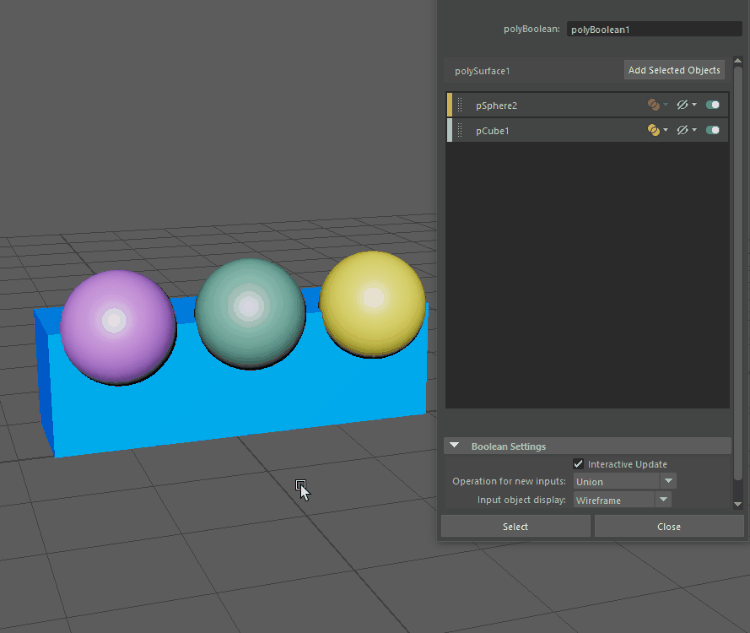

可以使用布尔堆栈为每个节点的新布尔输入对象设置默认布尔运算和显示模式，也可以使用“布尔运算”(Boolean Operations)选项进行全局设置。
为每个节点的新布尔输入对象设置默认值
- 在布尔堆栈中，选择“设置 > 针对新输入的操作/输入对象显示”(Settings > Operation for new inputs/Input object display)，然后从下拉菜单中选择默认设置。
- 单击“添加选定对象”(Add Selected Objects)。

将为选定节点设置默认值。
此方法可在节点级别设置默认值，从而允许您为不同的布尔节点使用不同的默认值。
为新的布尔输入对象全局设置默认值
- 在“布尔运算”(Boolean Operation)选项中，选择“网格 > 布尔 > <布尔运算>”(Mesh > Booleans > <BooleanOperation>) >
 。
。
- 从“针对新输入的操作”(Operation for new inputs)和“输入对象显示”(Input object display)下拉菜单中选择默认值。
默认值将在所有布尔运算中全局设置，并应用于场景中的所有布尔节点。